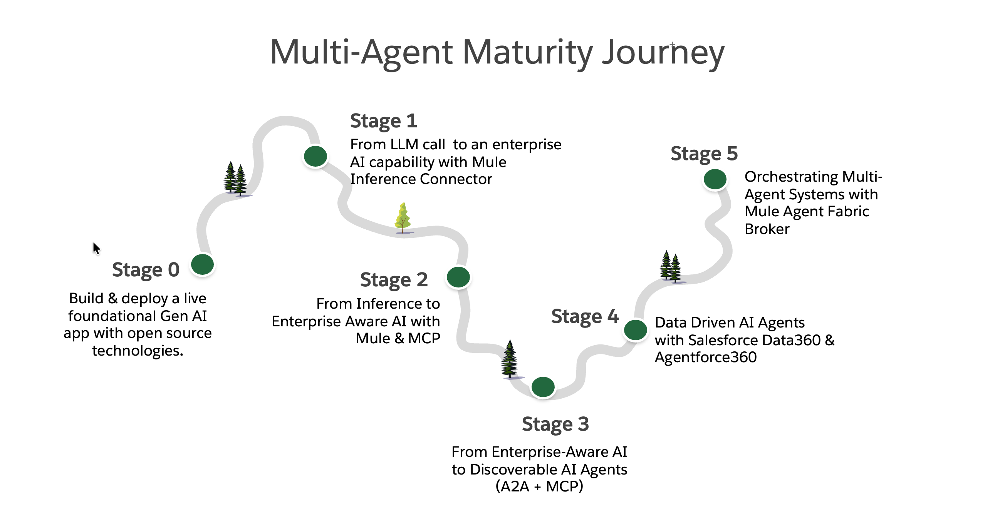

This guided hands-on workshop walks attendees through the key stages of building enterprise-grade AI systems—starting with foundational LLMs and progressing toward enterprise-aware, interoperable, and orchestrated multi-agent architectures.
In enterprises, multi-agent does not automatically mean that agents are wired together or coordinated by a broker. Multiple agents can exist independently, serve different purposes, and never interact—and this is still a valid, and often desirable, multi-agent design. Orchestration is a later-stage choice, introduced only when agents must collaborate to solve a shared problem or workflow.
In this workshop, we explore multiple architectural patterns for building realistic multi-agent strategies.
For simplicity, the workshop is modular, and each stage in the multi-agent architecture can be leveraged independently based on business requirements. The workshop is designed to provide a practical, end-to-end mental model for transforming business processes with AI.
Build and deploy a foundational Gen AI app that talks directly to a raw LLM, with no grounding, memory, or enterprise controls. This stage clarifies what an LLM can do on its own—and, just as importantly, what it cannot. You will develop a clean mental model of where “pure GenAI” ends and where real applications & platforms must begin.
Build and deploy a real, production-style LLM inference endpoint in Mule, exposed as a stable HTTP API and running on CloudHub. You will see how AI execution gains security, isolation, observability, and managed scaling the moment it is centralized behind the platform. You leave with the steps for creating reusable enterprise inference service that any application—or future agent—can safely consume without rework.
Extend the Mule-hosted inference capability so the system can consult authoritative enterprise data at runtime instead of guessing. You build an MCP server as a live source of truth and connect it to the LLM, making responses fact-grounded, explainable, and controllable. You leave with a true agent foundation—where intelligence is separated from knowledge and access is governed by the platform, not prompts.
Wrap your enterprise-aware AI capability in the Agent-to-Agent (A2A) protocol, turning it into a standardized, discoverable service that other machines—not just humans—can call. You deploy a real A2A server on CloudHub that exposes skills via an Agent Card while hiding internal reasoning, tools, and data access. You leave with a clear mental model of how AI capabilities are exposed machine-to-machine, how discovery and interoperability work without tight coupling.
Leverage Data360 to power Salesforce Agentforce within real employee and customer workflows. You see how enterprise agents operate with data, identity, and guardrails in place—and leave with a repeatable blueprint for embedding AI agents into Salesforce business processes.
Explore Mule Agent Fabric Broker to centrally discover, govern, and orchestrate multiple specialized agents across the enterprise. You explore how routing, coordination, and policy enforcement are defined declaratively—without hardcoding agent-to-agent links. You leave with a clear model for scaling from single agents to governed multi-agent systems without creating agent sprawl.
1. Salesforce
DXX22AQU). Please sign up for only one org. If your login link expires you don't need to sign-up again - just use the signup page and event code to retrieve (access) your old org.2. Heroku:
3. GitHub:
4. Groq LLM:
5. MuleSoft:
The instructions for Mule Remote Desktop will be sent to you via mail. However following is a summary: